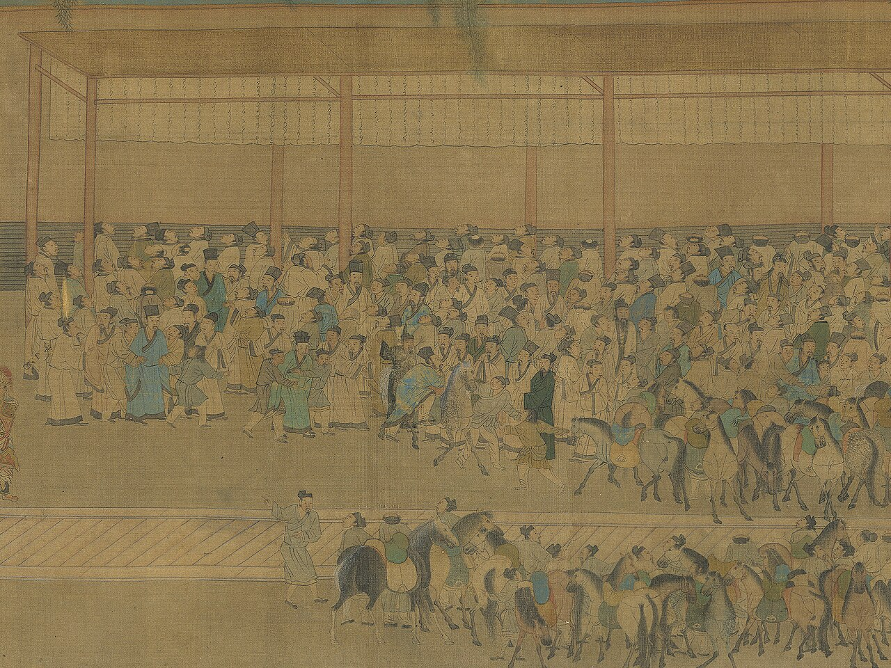

Икономически основи на бизнеса, НБУ
2026-10-01
От 100 нови фирми в България колко са живи след пет години?
| Автор | Предприемачът | Печалбата |
|---|---|---|
| Шумпетер (1942) | иноватор, който въвежда нови комбинации и измества старите (creative destruction) | временна, докато иновацията не бъде копирана |
| Кирцнер (1973) | откривател на възможности, които другите пропускат | ценова разлика, която другите не са забелязали |
| Найт (1921) | носител на несигурност, която не може да се застрахова | възнаграждение за тази несигурност |
Baumol, Litan & Schramm (2007): предприемач е всеки, нов или съществуващ, който предлага нов продукт или услуга или въвежда по-евтин начин да произвежда и доставя съществуващите.
| по възможност | по необходимост |
| предприемач | предприемач в организацията |
| иновация | копиране |
| Вид | Какво прави | Пример |
|---|---|---|
| Продуктивно | създава стойност | нов продукт, по-евтин процес |
| Непродуктивно | преразпределя стойност | лобиране, заобикаляне на правила |
| Разрушително | унищожава стойност, може да е незаконно | неморално, непродуктивно |
Талантът е общо взето константен. Правилата решават къде отива (Baumol 1990).
В имперски Китай най-способните не отиват в бизнеса, а на изпитите за държавни чиновници.
Къде отиват най-способните у нас днес?

Помислете за всеки случай.
survival = {
const rows = bd.filter((d) => d.indicator === "survival_5y");
const years = d3.intersection(...["BG", "EU27_2020"].map((g) => rows.filter((d) => d.geo === g).map((d) => d.year)));
const year = d3.max(years);
const pick = rows.filter((d) => d.year === year)
.map((d) => ({ ...d, label: d.geo === "BG" ? "България" : "ЕС-27" }))
.sort((a, b) => (a.geo === "BG" ? -1 : 1));
return { year, rows: pick };
}Plot.plot({
width: 560,
height: 250,
marginLeft: 104,
marginRight: 56,
marginTop: 40,
marginBottom: 48,
style: { fontFamily: font, fontSize: "17px", color: ink },
ariaLabel: "Петгодишна преживяемост на новите фирми",
x: { domain: [0, 100], ticks: [0, 25, 50, 75, 100], tickFormat: (d) => `${d}%`, label: `живи след 5 години (фирми, създадени през ${survival.year - 5} г.)` },
y: { label: null, domain: survival.rows.map((d) => d.label), tickSize: 0 },
marks: [
Plot.barX(survival.rows, { x: "value", y: "label", fill: (d) => (d.geo === "BG" ? "#444" : "#aaa"), insetTop: 8, insetBottom: 8 }),
Plot.text(survival.rows, { x: "value", y: "label", text: (d) => pct(d.value / 100), dx: 8, textAnchor: "start", fontSize: 19, fill: ink }),
Plot.ruleX([0], { stroke: ink }),
Number.isFinite(guess) ? Plot.ruleX([guess], { stroke: ink, strokeWidth: 2.5, strokeDasharray: "7 5" }) : null,
Number.isFinite(guess) ? Plot.text([guess], { x: (d) => d, frameAnchor: "top", dy: -24, text: (d) => `Вашата прогноза: ${num(d)}%`, fontSize: 17, fill: ink }) : null,
],
})Plot.plot({
width: 500,
height: 300,
marginLeft: 44,
marginRight: 100,
marginTop: 42,
style: { fontFamily: font, fontSize: "15px", color: ink },
ariaLabel: "Нови плюс закрити фирми, % от активните, България и ЕС-27",
x: { label: null, tickFormat: (d) => String(d), ticks: [2010, 2015, 2020, 2024] },
y: { domain: [0, 30], label: "нови + закрити фирми, % от активните", grid: true },
marks: [
Plot.ruleX([2020.5], { stroke: "#999", strokeDasharray: "4 4" }),
Plot.text([2020.5], { x: (d) => d, frameAnchor: "top", dy: -14, text: () => "нова методология", textAnchor: "start", dx: -4, fill: "#666", fontSize: 13 }),
Plot.line(churn, { x: "year", y: "value", z: (d) => d.geo + d.series, stroke: (d) => (d.geo === "BG" ? ink : "#999"), strokeWidth: 2.5 }),
Plot.dot(churn, { x: "year", y: "value", fill: (d) => (d.geo === "BG" ? ink : "#999"), r: 3 }),
Plot.text(churnEnds, { x: "year", y: "value", text: "label", dx: 8, textAnchor: "start", fill: (d) => (d.geo === "BG" ? ink : "#666") }),
],
})Около 4 от 10 нови фирми в България оцеляват пет години, близо до средното за ЕС.
Plot = import("https://cdn.jsdelivr.net/npm/@observablehq/plot@0.6.17/+esm")
import { criticalLoss, profitChange, lossVerdict } from "./lib/models.js"
import { pct, num, eur } from "./lib/format.js"
ink = "#222"
font = "Helvetica Neue, Helvetica, Arial, sans-serif"
bd = FileAttachment("data/eurostat_bd.csv").csv({ typed: true })
churn = bd.filter((d) => d.indicator === "churn" && d.year >= 2008)
churnEnds = ["BG", "EU27_2020"].map((g) => {
const last = d3.greatest(churn.filter((d) => d.geo === g), (d) => d.year);
return { ...last, label: g === "BG" ? "България" : "ЕС-27" };
})225 000 000 × (1/2)20 ≈ 215
Двете грешки на основателите: „целият пазар на храни е наш“ и „нямаме конкуренти“.
| Граница | Определя се от | Пример |
|---|---|---|
| Физическа | докъде стига стоката | електроенергия: пазарните зони и междусистемните връзки |
| Регулаторна | какво казва законът | лицензите за таксиметров превоз в София |
| Икономическа | какво клиентът смята за заместител | такситата в София (следващият слайд) |
Кои от тях са на пазара на таксиметрови услуги в София?
КЗ = X / (X + M)
Plot.plot({
width: 560,
height: 200,
marginLeft: 16,
marginRight: 28,
marginTop: 52,
marginBottom: 52,
style: { fontFamily: font, fontSize: "18px", color: ink },
ariaLabel: "Очаквана загуба на клиенти спрямо критичната загуба",
x: { domain: [0, 0.6], ticks: [0, 0.1, 0.2, 0.3, 0.4, 0.5, 0.6], tickFormat: (d) => pct(d, { min: 0, max: 0 }), label: "клиенти, които си тръгват" },
y: { axis: null, domain: ["L"] },
marks: [
Plot.barX([L / 100], { x: (d) => d, y: () => "L", fill: "#999", insetTop: 6, insetBottom: 6 }),
Plot.ruleX([cl], { stroke: ink, strokeWidth: 3 }),
Plot.text([cl], { x: (d) => d, frameAnchor: "top", dy: -30, text: (d) => `КЗ = ${pct(d)}`, fontSize: 17, fill: ink }),
Plot.ruleX([0], { stroke: ink }),
],
})Колкото по-голяма е разликата между приходи и разходи, толкова по-малко клиенти можеш да си позволиш да загубиш.
Ако Instagram удвои рекламите, къде отиваш?
Вярно или невярно: „Български пощи“ има законов монопол. Невярно.
| Бариера | Пример |
|---|---|
| Икономии от мащаба | електропреносната мрежа (естествен монопол) |
| Невъзвратими разходи | рафинерия, телекомуникационна мрежа |
| Мрежови ефекти | Viber: там са всички |
| Регулация и лицензи | такситата; лобито за нов лиценз от случай 5 |
| Контрол върху ключов ресурс | рафинерия, пристанищен терминал |
Ако собственикът трябва да излезе, по-лесно ли е навлизането? Къде са тесните места?
Колко аптеки трябват на един малък град, за да паднат цените: 1, 2, 3 или 5 и повече?
Повечето промяна идва с втората и третата фирма. Следващите променят малко (Bresnahan & Reiss 1991).
Вие сте заварен играч. Новият вече е влязъл. Борите ли се за запазване на пазарния дял или допускате навлизане на нов участник?
Печалби: (предприемач, заварен).
Заплахата не е достоверна.
Преди новия играч завареният може да построи допълнителен капацитет на цена 3. Платен веднъж, той прави борбата евтина; ако стои неизползван, е чист разход.
Ангажиментът работи само ако е видим и необратим (Dixit 1980).
Ако новите не знаят със сигурност дали завареният е склонен да се бори, борбата в първите градове му създава репутация, която възпира следващите (Kreps & Wilson 1982; Milgrom & Roberts 1982).
При смяна на телефон (от iOS към Android или обратно), банка и мобилен оператор кое ще ти струва най-много: пари, време, данни или приятели?
| Стратегия | Как | Пример |
|---|---|---|
| Остани малък | влез толкова малък, че да не си струва да те атакуват („джудо икономика“) | нискотарифни авиолинии |
| Заобиколи | не се бори там, където завареният е силен | TikTok не се бори с мрежата от приятели на Facebook; Revolut влиза с един продукт и европейска локация |
| Сътрудничи | лиценз, партньорство или продажба на заварения играч | Telerik, продадена на Progress (2014) |
| Конкурирай се със заварените | Сътрудничи със заварените | |
|---|---|---|
| Контролирай идеята | архитектурна стратегия | интелектуална собственост |
| Изпълнявай бързо | разрушителна иновация | верига на стойността |
Бариерите за навлизане пазят печалбите на заварените играчи и заедно с тях ниската им производителност.
През 2025 г. бюджетната комисия на парламента одобри идея за държавна верига магазини само с български продукти и надценка до 10%.
Baumol, W. J. (1990). Entrepreneurship: Productive, Unproductive, and Destructive. Journal of Political Economy.
Baumol, W. J., Litan, R. E. & Schramm, C. J. (2007). Good Capitalism, Bad Capitalism. Yale University Press.
Bhidé, A. (2000). The Origin and Evolution of New Businesses. Oxford University Press.
Bresnahan, T. & Reiss, P. (1991). Entry and Competition in Concentrated Markets. Journal of Political Economy.
Buffett, W. (1984). The Superinvestors of Graham-and-Doddsville. Hermes, Columbia Business School.
Dixit, A. (1980). The Role of Investment in Entry-Deterrence. Economic Journal.
Dunn, T. & Holtz-Eakin, D. (2000). Financial Capital, Human Capital, and the Transition to Self-Employment. Journal of Labor Economics.
Foster, L., Haltiwanger, J. & Krizan, C. J. (2006). Market Selection, Reallocation, and Restructuring in the U.S. Retail Trade Sector in the 1990s. Review of Economics and Statistics.
Gans, J., Scott, E. & Stern, S. (2018). Strategy for Start-Ups. Harvard Business Review.
Gelman, J. & Salop, S. (1983). Judo Economics: Capacity Limitation and Coupon Competition. Bell Journal of Economics.
Hamilton, B. (2000). Does Entrepreneurship Pay? Journal of Political Economy.
Holtz-Eakin, D., Joulfaian, D. & Rosen, H. (1994). Entrepreneurial Decisions and Liquidity Constraints. RAND Journal of Economics.
Kirzner, I. (1973). Competition and Entrepreneurship.
Knight, F. (1921). Risk, Uncertainty and Profit.
Kreps, D. & Wilson, R. (1982). Reputation and Imperfect Information. Journal of Economic Theory.
Levine, R. & Rubinstein, Y. (2017). Smart and Illicit: Who Becomes an Entrepreneur and Do They Earn More? Quarterly Journal of Economics.
Lindh, T. & Ohlsson, H. (1996). Self-Employment and Windfall Gains: Evidence from the Swedish Lottery. Economic Journal.
Milgrom, P. & Roberts, J. (1982). Predation, Reputation, and Entry Deterrence. Journal of Economic Theory.
Schumpeter, J. (1942). Capitalism, Socialism and Democracy.
Selten, R. (1978). The Chain Store Paradox. Theory and Decision.
Икономически основи на бизнеса | НБУ